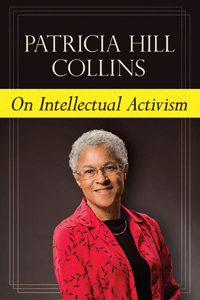

<body bgcolor="#FFFFFF" text="#000000" link="#0000FF" vlink="#CC0000" alink="#CC0000"><center><hr width="350" size="1" align="center" noshade>From the author of the classic <I>Black Feminist Thought</I>, a book on the nature and value of the public intellectual<hr width="350" size="1" align="center" noshade><p><a href="https://cdcshoppingcart.uchicago.edu/Cart/ChicagoBook.aspx?ISBN=9781439909607&&PRESS=temple" target="_top">Buy this book!</a> | <a href="https://cdcshoppingcart.uchicago.edu/Cart/Cart.aspx?PRESS=temple" target="_top">View Cart</a> | <a href="https://cdcshoppingcart.uchicago.edu/Cart/Cart.aspx?PRESS=temple" target="_top">Check Out</a></p><p></p></center><!--none//--><h1>On Intellectual Activism</h1>
<h3>Patricia Hill Collins</h3>
<P>cloth 1-4399-0960-1 $80.50, Nov 12, <FONT COLOR=#990033>Available</FONT>
<br>paper 1-4399-0961-X $26.95, Nov 12, <FONT COLOR=#990033>Available</FONT>
<br>Electronic Book 1-4399-0962-8 $26.95 <FONT COLOR=#990033>Available</FONT>
<BR> 278 pp
6x9
</P><BLOCKQUOTE><I>"</I>On Intellectual Activism<I> is a book that people need to read. This extraordinary collection of essays addresses many of the most urgent questions our society faces. Collins explains why questions of knowledge and power are more important than ever. She presents a new scholarly and civic agenda for social justice by taking schooling seriously but also by looking carefully and creatively at the promise of education beyond the classroom. This book presents an extremely timely and greatly needed 'reality check' for scholars across the disciplines in feminist studies, ethnic studies, and cultural studies. It advances a unique understanding of our most serious problems from the perspective of one of our most respected scholar-activists." </I>
<br>&#151<b>George Lipsitz</b>, author of <I>How Racism Takes Place</I><I></I></BLOCKQUOTE>
<P>Sociologist Patricia Hill Collins has been called in <i>Contemporary Sociology</i> "one of the defining voices of contemporary feminist and race scholarship." Well known for her contributions to sociology, social theory, and cultural studies, her numerous publications indicate why she has been a tireless voice for social justice causes such as the dynamics of race, social class, gender, and sexual equality, and also black feminist politics.
<P>In <i>On Intellectual Activism</i>, Collins asks scholars and public intellectuals to assess the meaning of their work. She challenges readers to rethink the potential of speaking truth to power, and examines both the role of the intellectual in public life and how well questions of contemporary social issues are communicated to the public at large.
<P>The contents of this volume&#8212;public lectures, previously published pieces, interviews, and new essays&#8212;illustrate the important conceptual anchors of Collins' work and reflect on the major themes of her illustrious career. These timely and thought-provoking essays include topics ranging from black feminist thought, critical education, public sociology, and resisting racism to new visions for activist intellectuals.
<BR>&nbsp;<h2>Excerpt</h2><P>Excerpt available at <a href="http://www.temple.edu/tempress">www.temple.edu/tempress</a></p>
<BR>&nbsp;<h2>Reviews</h2>
<p><I>"Patricia Hill Collins consistently does great work, and in </I>On Intellectual Activism<I>, she makes the distinction of speaking truth to power and truth to the people. There is much truth to be told here. She also gives us some new ideas as well as a language for talking about what is happening within institutions and our social networks. Collins provides a way to think about the very concept of a �post-racial world� that merits the attention of us all and can get us out of the either/or thinking in this arena. </I>On Intellectual Activism<I> should promote rich conversations about feminism, education, activism, and current political trends."</I> <br>&#151<b>Elizabeth Higginbotham</b>, Professor of Sociology at the University of Delaware
<p><i>"</i>On Intellectual Activism<i> is Collins' attempt to frame her more-than-20-year intervention in the critical issues of gender, race and sexuality for an audience not likely to sit in on her&#151or anyone else's&#151introduction to gender studies class.... Her book is a cogent reminder of the stakes of engagement."</I>
<br>&#151<b><I>Ms. magazine</I></b>
<p><i>"</i>On Intellectual Activism<i>...presents readers with an opportunity to marvel at the incredible internal coherence of [Collins's] life�s work. The sociology of Collins�s imagining is quite appealing. Despite the sorrow reflected and generated by many of the topics under consideration, her analyses are enormously enjoyable to read because she is so cogent and she notices so much. Like a present-day sage, she seems able to interpret any situation�from the family rhetoric that supported Barack Obama�s presidential election to the selection of housewares available at T. J. Maxx�with acuity.... Her longstanding and gorgeously articulated contempt for the problematic standards that govern success in academia is on proud display in these writings that span decades."</I><br>&#151<b><I>Gender and Society</I></b>
<p><i>"</i>On Intellectual Activism<i> is a welcome addition to the conversation about the deeply contradictory relationship between the academy and the street, between scholars and the movement, and what progressive and revolutionary intellectuals must do. Patricia Hill Collins speaks truth to the people and truth to power in the voice of black feminism and a politically engaged intellectual activism in the service of twenty-first century social justice, a project she envisions to confront today�s gender, race, sexual, and class oppression, exploitation, and injustice in the United States and global society.... </i>On Intellectual Activism<i> is an accessible and rich toolbox. Collins uses storytelling, translates the language of academic theory into the language of people�s lives, and clarifies new forms of racism and oppression. Her voice resonates with multiple publics�students, scholars, and communities. She offers a reality check and a refreshing critique of dominant and mainstream voices and forces in sociology and society. She validates the experience of sociological rebels and intellectual activists who are marginalized within the discipline, the profession, and the university where many of us practice our craft and juggle the contradictions of academic survival and social justice demands."</I><br>&#151<b><I>Contemporary Sociology</I></b>
<BR>&nbsp;<h2>Contents</h2><P>
<p>Acknowledgments
<br>Introduction
<br>Note on Usage</p>
<p><b>I. Black Feminism</b>
<br>1. Why Black Feminist Thought?
<br>2. <i>Fighting Words</i> . . . Or Yet Another Version of �The Emperor�s New Clothes�
<br>3. <i>Black Sexual Politics</i> 101
<br>4. Resisting Racism, Writing <i>Black Sexual Politics</i>
<br>5. Still Brave? Black Feminism as a Social Justice Project</p>
<p><b>II. Sociology of Knowledge</b>
<br>6. Learning from the Outsider Within Revisited
<br>7. Going Public: Doing the Sociology That Had No Name
<br>8. Changing Times: Sociological Complexities
<br>9. The Racial Threat
<br>10. Rethinking Knowledge, Community, and Empowerment: An Interview</p>
<p><b>III. Critical Education</b>
<br>11. Critical Pedagogy and Engaged Scholarship: Lessons from Africana Studies
<br>12. Teaching for a Change: Critical Pedagogy and Classroom Communities
<br>13. Another Kind of Public Education
<br>14. Making Space for Public Conversations: An Interview</p>
<p><b>IV: Racial Politics</b>
<br>15. Coloring Outside the Color Line
<br>16. Are We Living in a Post-Racial World?
<br>17. The Ethos of Violence
<br>18. Who�s Right? What�s Left? Family Values and U.S. Politics</p>
<p><b>V: Intellectual Activism Revisited</b>
<br>19. Toward a New Vision: Race, Class, and Gender as Categories of Analysis and Connection
<br>20. Where Do We Go from Here?</p>
<p>Index</p>
</P><BR>&nbsp;<H2>About the Author(s)</H2>
<P><b>Patricia Hill Collins</b> is Distinguished University Professor of Sociology at the University of Maryland, College Park, and author of <i><a href="1746_reg.html" target="_top">From Black Power to Hip Hop: Racism, Nationalism and Feminism</a></i> (Temple), <i>Black Feminist Thought: Knowledge, Consciousness, and the Politics of Empowerment</i> and <i>Black Sexual Politics: African Americans, Gender and the New Racism</i>. She is a Past President of the American Sociological Association.</P>
<BR><H2>Subject Categories</H2>
<p><A HREF="/tempress/sociology.html" TARGET="_top">Sociology</a>
<BR><A HREF="/tempress/african.html" TARGET="_top">African American Studies</a>
<BR><A HREF="/tempress/women.html" TARGET="_top">Women's Studies</a>
</p>
<p align="center"><a href="https://cdcshoppingcart.uchicago.edu/Cart/ChicagoBook.aspx?ISBN=9781439909607&&PRESS=temple" target="_top">Buy this book!</a> | <a href="https://cdcshoppingcart.uchicago.edu/Cart/Cart.aspx?PRESS=temple" target="_top">View Cart</a> | <a href="https://cdcshoppingcart.uchicago.edu/Cart/Cart.aspx?PRESS=temple" target="_top">Check Out</a></p><p><font face="Arial" size="1"><a href="copyright.html" onMouseOver="window.status='Web Copyright Policy';return true;" onMouseOut="window.status=''" title="Web Copyright Policy">&copy;</a> 2015 <a href="http://www.temple.edu" target="new" onMouseOver="window.status='Link to Temple University home page';return true;" onMouseOut="window.status=''" title="Link to Temple University home page">Temple University</a>. All Rights Reserved. http://www.temple.edu/tempress/titles/2243_reg.html</font></p>